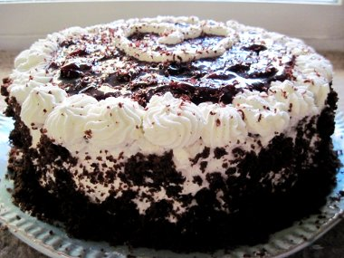

Black Forest Cake Recipe
Here's the recipe for the preparation of a blackforest cake. This recipe prepares the cake for 8 servings.
Ingredients
For Cake:
- Eggless chocolate sponge cake
- ½ tin canned cherries and syrup
- 1 cup fresh whipped cream
- 3 tablespoon powdered sugar
- 4 tablespoon grated dark chocolate
- ½ tablespoons vanilla essence
Method of Preparation
- Beat the cream over a tray of icecubes with a hand beater. Do not overbeat. It should form soft peaks. Fold in the sugar and essence. Mix gently. Put some icing in a icing gun leave the rest in the bowl. Keep both in the refrigerator.
- Slice the cake into 2 horizontal halves. Place on a tray on a mesh. Sprinkle 2-3 tablespoon syrup of cherries on each half. Allow to soak for 10 minutes.
- Spread the cream icing on lower half. Transfer to a cake plate. Place the cherries on the cream. Save a few for topping.
- Place the other half on top. With icing gun decorate top edging. Spread the chocolate flakes all over and decorate with cherries.